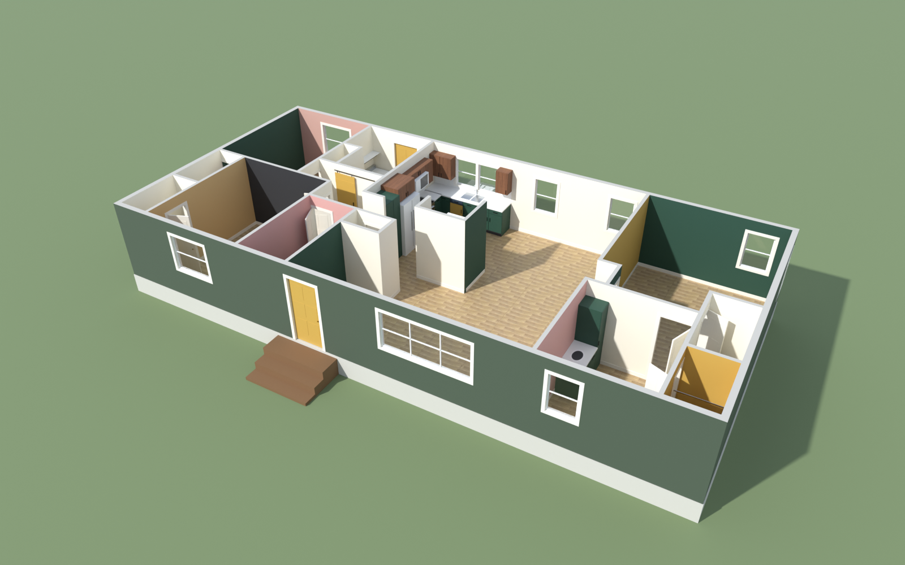

Trace your floor plan from a blueprint, pick a colour for any wall, ceiling, cabinet door or trim piece, walk through the rooms, and render the result in Blender.

Upload a photo or PDF of your plan, set the scale, click the walls, drop in doors, windows, rooms, cabinets and fixtures.
Open the editor → 2 · Paint studioEvery wall face, ceiling, door and cabinet door has its own colour. Walk through with WASD, and share a scheme as a link.
Open the studio → 3 · Floor planA drawn floor plan with the paintable surfaces mapped out, plus before and after views of a remodel.
Open the plan →No account, no AI service, no upload. It all runs in your browser, and your drawings stay on your device until you save them.
Walls, openings, rooms, cabinets and heights live in a readable JSON file you can keep, edit and share.
Export your scheme and the Blender add-on rebuilds the house with the same colours, ready to render.
MIT licensed. Colours come from an original palette, and you can add a paint maker's own book on your own machine.